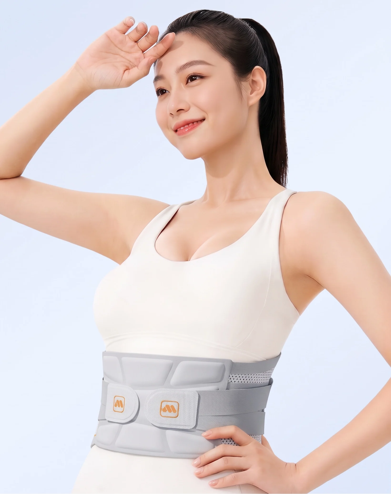
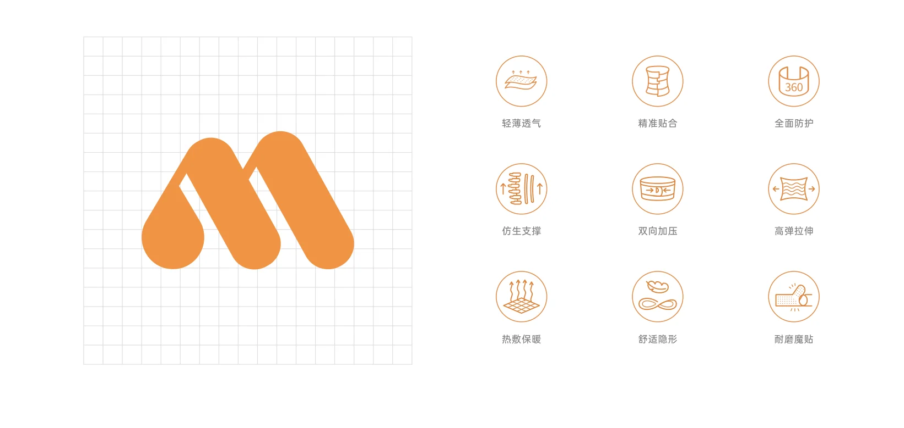
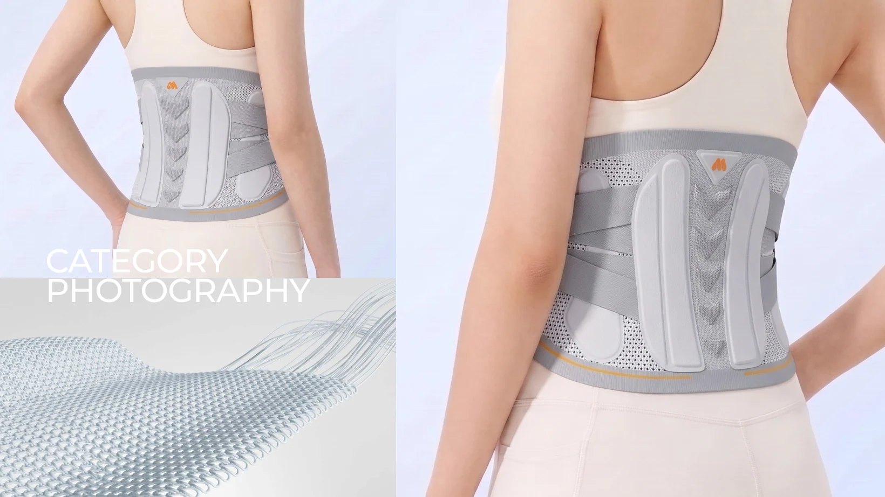
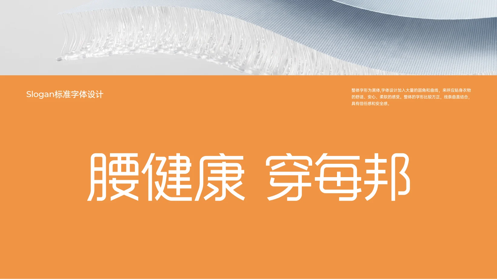
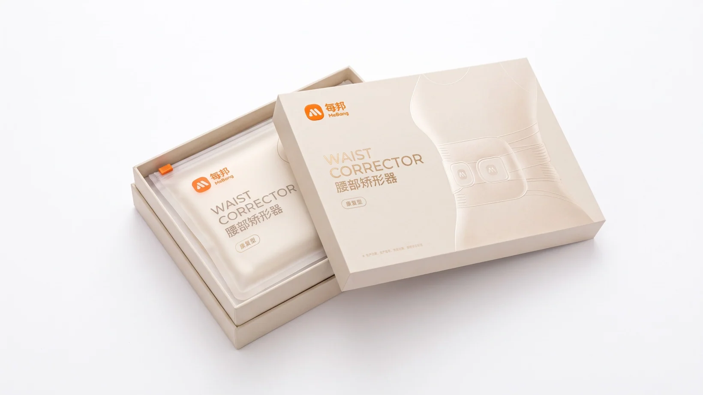
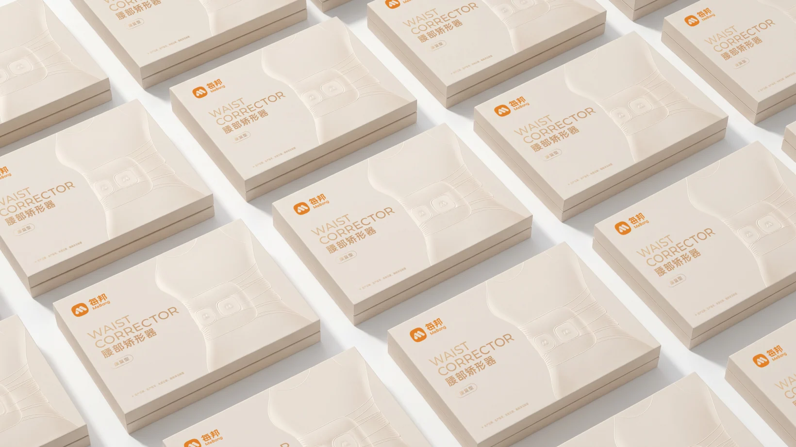
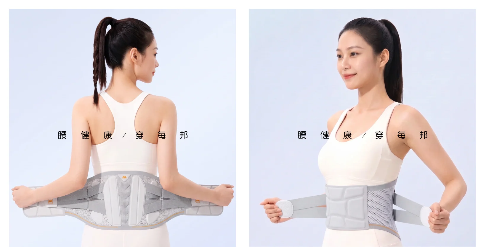
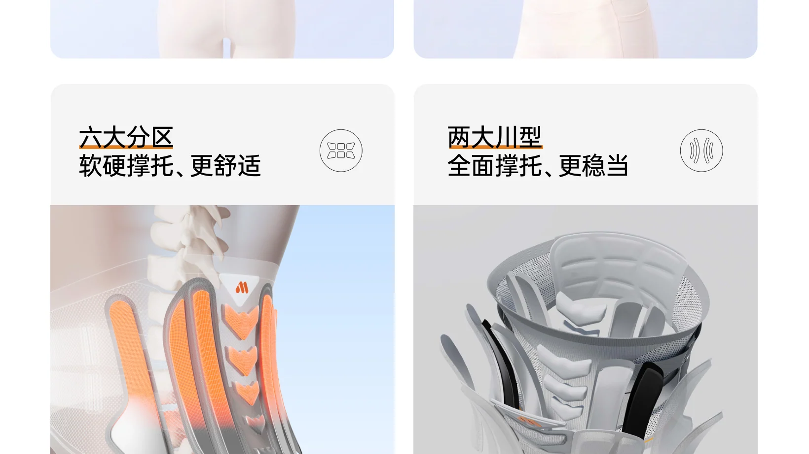
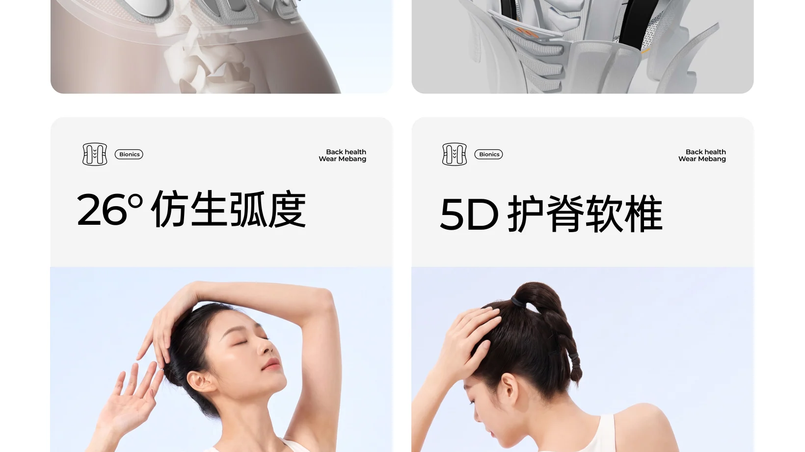
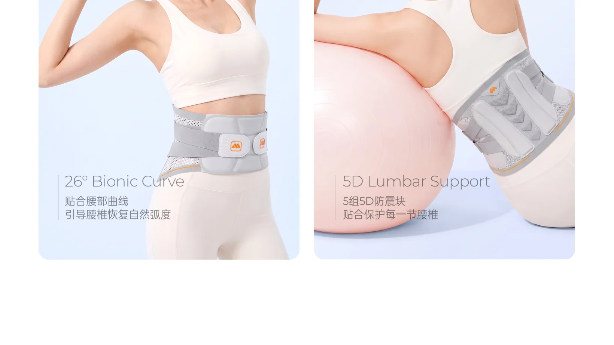

Step 02新品牌从 0 到 1
每邦护腰带
围绕办公、通勤等日常场景，建立「专业护腰，穿戴舒适」的价值表达，再用统一的视觉系统、包装与电商页面承接。
- 我的职责
- 品牌策划与视觉统筹
- 项目范围
- 品牌定位、符号与色彩、品类摄影、包装及电商详情


Brand Positioning
品牌定位
从日常支撑场景切入
- 生活场景 · 专业品牌
- 以护腰带为核心品类建立每邦品牌认知。
- 腰部支撑 · 场景适配
- 面向办公、通勤等有日常腰部支撑需求的场景。
- 支撑需求 · 舒适体验
- 关注穿戴操作便利性和与日常衣着的协调。
- 品牌视觉 · 统一形象
- 用统一的视觉语言承接品牌定位。
Product Messaging
FAB 话语体系
把产品特性转成穿戴利益
按特性、优势、利益的顺序，让用户理解护腰带的实际使用价值。
- 特性 · 轻薄隐形
- 贴合衣着，承接办公与通勤等日常穿戴场景。
- 优势 · 仿生支撑
- 用分区和结构说明支撑方式。
- 利益 · 无感穿戴
- 围绕透气、轻负担与减少束缚表达穿戴体验。
Customer Insight
用户痛点
专业护腰，穿戴舒适
聚焦厚重显形、闷热不适、穿戴束缚三类问题。
- 先建立品类认知
- 让用户在了解支撑能力的同时，把穿戴舒适也作为选择护腰带的标准。
- 再建立每邦选择理由
- 用衣下贴合、透气舒适和减少束缚说明每邦在日常穿戴中的差异。
Visual Symbols
符号传播系统
品牌符号与九项功能图标
以 M 形品牌符号建立识别，将产品功能通过一套线性图标呈现。


Brand Color
品牌色彩
每邦品牌橙
将品牌色延续到识别、传播与产品体验中。
Pantone P30-6CCMYK 5 / 55 / 75 / 0 · RGB 242 / 149 / 68
Photography
品类摄影
让贴合方式和材质可见
通过实际穿戴角度与材质特写，展示护腰带如何贴合身体。


Campaign Typography
口号标准字体
腰健康，穿每邦
等线黑体建立稳定感，圆角与曲线呼应贴身穿戴的柔软和安心。


Packaging
包装设计
礼盒与内袋的统一呈现
将品牌识别落到礼盒与内袋，统一包装开合前后的视觉表达。




E-commerce Design
电商详情页
从穿戴演示到支撑结构
先演示如何穿戴，再用结构图讲解六大分区、两大川型、26° 仿生弧度和 5D 护脊软椎。







